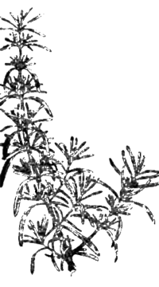

Розмарин (rosmarinus officinalis)
")
Синоним: морская роса. Вечнозеленый ветвистый полукустарник семейства губоцветных, высотой до двух метров.
Родина — Западное Средиземноморье. Возделывается по всему Средиземноморью, в Малой Азии, на Южном берегу Крыма, на Черноморском побережье Кавказа и в Закавказье, а также во всех влажных субтропиках. В США — во Флориде. В качестве пряности используются свежие или сухие листья — узкие, кожистые, размером 3,5X0,4 сантиметра с завернутыми краями.
В свежем виде окраска листьев сверху серовато-зеленая, снизу— серебристо-беловатая; в сухом виде они серовато-зеленоватые, более темные сверху. Лучший розмарин растет на наиболее высоких, скалистых участках. Для использования в кулинарии годится, однако, не всякий лист. Во-первых, листья следует собирать до цветения розмарина, точнее даже до появления бутонов. Вовторых, брать надо только наиболее молодые, нежные листья, расположенные на верхней трети ветвей. В-третьих, сушить розмарин можно только в тени. Тогда листья и в сухом виде сохраняют приятный ароматичный запах, слегка отдающий камфарой, и имеют горьковато-пряный вкус.

Хорошо высушенные листья должны быть очень хрупкими, иметь выпуклую верхнюю поверхность и свернутую нижнюю.
Как пряность розмарин известен с глубокой древности. Он широко используется в Португалии, Испании, Италии, Франции, Греции, Англии, США, Скандинавии и Германии. К сожалению, розмарин почти не применяется в СССР, хотя и произрастает на нашей территории почти по всему Черноморью.
Розмарин главным образом идет в мясные блюда (жаркое из свинины, баранины, крольчатины), где выполняет двоякую роль: во-первых, отбивает специфический запах этих видов мяса, а во-вторых, придает мясу домашних животных аромат дичи. Именно с этой последней целью розмарин используют при приготовлении домашней птицы — тушеных и жареных кур, уток, индюшек: небольшое количество порошка сухих листьев розмарина или резаных свежих листьев смешивают с мелко-резанной зеленью петрушки и растирают со сливочным маслом в пасту, которую закладывают маленькими порциями под кожу груди и ног птицы, предназначенной для жарения или тушения.
В умеренных дозах розмарин употребляется также для придания особого акцента супам — мясным, куриным, шпинатным, гороховым. Во французской кухне розмарин входит в состав супового «букета гарни», который никогда не оставляют в супе, а вынимают через 5— 6 минут после погружения. В целом с розмарином следует обращаться так же, как и с лавровым листом, помня, что при передержке он способен придать блюду неприятный горький привкус. Если употребляется розмарин, то лавровый лист не употребляется, и наоборот.
Кроме того, розмарин применяют при жарении рыбы на углях и решетке и как приправу к соусам и подливкам из свиного сала или мяса, а также для таких овощных блюд, как гороховое пюре, отварная и свежая цветная капуста.
Розмарином сдабривают макароны и добавляют его в итальянские пресные лепешки — пицци. Используют розмарин и во фруктовых салатах, подаваемых на десерт. В маринадах розмарин можно применять как и эстрагон, но оттенок вкуса, сообщаемый им маринованной снеди, будет, конечно, иным.
Примечание. Розмарин не следует путать с так называемым диким розмарином, или болотным багуном (багульником) (Ledumpalustre L.), ничего общего ни с розмарином, ни с пряностями не имеющим и распознающимся по рыжевато-бурому цвету оборотной стороны листа.